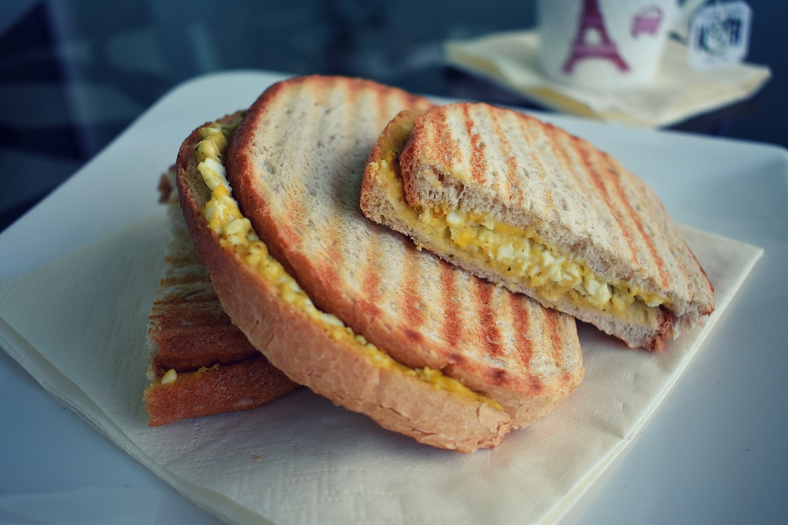
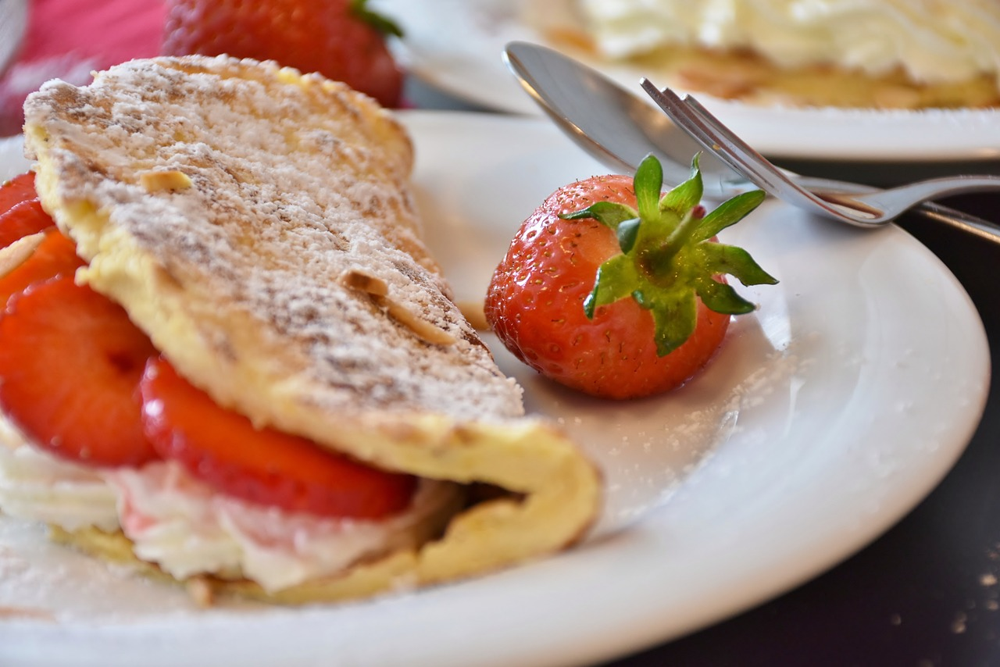
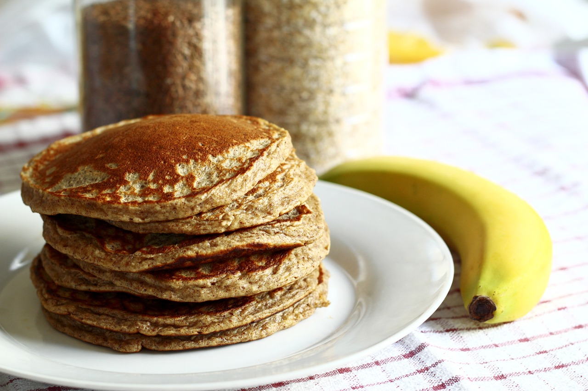

Desayunos saludables
- 
- 
- 

Sandwich de Huevo.
- 1 muffin inglés
- 4 huevos
- 2 cdas leche vegetal (o la de tu preferencia)
- 2 cdtas mostaza
- Perejil fresco (al gusto)
- Sal de mar (al gusto)
- 1 cda mantequilla
- Opcional: tomate, espinaca, aguacate
Ingredientes:
- En un tazón poner los huevos, la leche, la mostaza, el perejil y la sal. Revolver muy bien.
- En un sartén colocar la mantequilla, esperar a que se derrita un poco y verter la mezcla del huevo.
- Cocinar a fuego medio bajo por unos 7 minutos.
- Cortar la tortilla de huevo en triángulos.
- Esparcir un poco de mantequilla en el muffin y colocar el huevo dentro del sandwich.
Modo de preparación:
Volver al Inicio.
Wrap Dulce
- 1 tortilla integral
- 2 cdas mantequilla de almendra
- 1/2 plátano
- 3 fresas
- Pizca de canela
- Pizca de sal de mar
Ingredientes:
- Sobre la tortilla, esparcir la mantequilla de almendra y colocar las rodajas de fruta.
- Doblar como burrito.
- Disfrutar!
Modo de preparación:
Volver al Inicio.
Pancakes de Plátano
- 1 plátano
- 2 huevos
- Pizca de sal
- 1 cda mantequilla
- Miel de maple, al gusto
- Pizca de canela
Ingredientes:
- Machacar el plátano y mezclar con el huevo y sal.
- En un sartén colocar la mantequilla, esperar a que se derrita un poco y verter la mezcla.
- Voltear cada pancake para que se cocine de los dos lados.
- Terminar con miel de maple y canela.
Modo de preparación:
Volver al Inicio.
Pudín de Chía
- 1/4 taza semilla chia
- 1 taza leche almendra (o la de tu preferencia)
- 1 cda miel de abeja
- Pizca de canela
- Pizca de sal de mar
- Toppings: cualquier fruta que tu quieras
Ingredientes:
- En un recipiente colocar la leche, las semillas de chia, miel y la canela. Revolver muy bien.
- Meter al refrigerador y dejar reposar al menos 1 hora.
Modo de preparación:
Volver al Inicio.